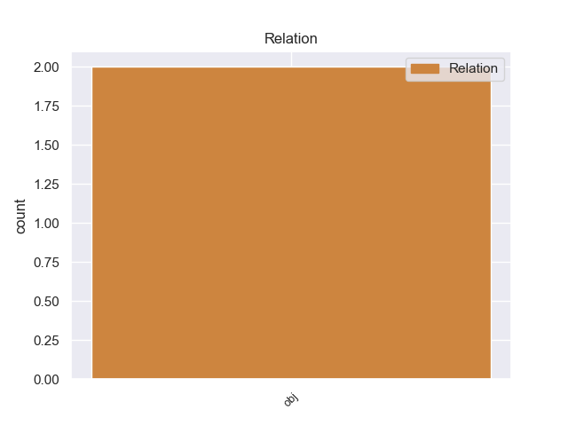
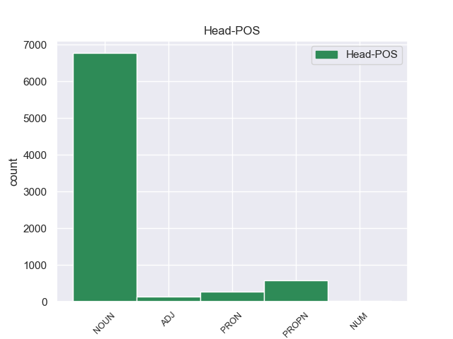
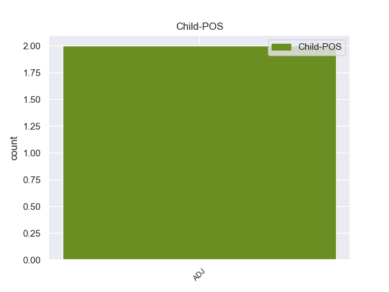

Distribution of features within this leaf



Agreement Rules sorted by frequency.
- When the dependent token is the determiner(det) of the head token, and the head token is NOUN and the dependent token is DET.
1 Σκιάθος _ _ _ _ 0 _ _ _
2 - _ _ _ _ 0 _ _ _
3 Η ο DET DET Case=Nom|Definite=Def|Gender=Fem|Number=Sing|PronType=Art 5 det _ _
4 Ιερά _ _ _ _ 0 _ _ _
5 Μονή μονή NOUN NOUN Case=Nom|Gender=Fem|Number=Sing 0 _ _ _
6 Ευαγγελίστριας _ _ _ _ 0 _ _ _
7 . _ _ _ _ 0 _ _ _
1 Σε _ _ _ _ 0 _ _ _
2 κοντινή _ _ _ _ 0 _ _ _
3 απόσταση _ _ _ _ 0 _ _ _
4 από _ _ _ _ 0 _ _ _
5 τον _ _ _ _ 0 _ _ _
6 Αρτεμώνα _ _ _ _ 0 _ _ _
7 βρίσκεται _ _ _ _ 0 _ _ _
8 η ο DET DET Case=Nom|Definite=Def|Gender=Fem|Number=Sing|PronType=Art 9 det _ _
9 Απολλωνία Απολλωνία PROPN PROPN Case=Nom|Gender=Fem|Number=Sing 0 _ _ _
10 και _ _ _ _ 0 _ _ _
11 τα _ _ _ _ 0 _ _ _
12 χωριά _ _ _ _ 0 _ _ _
13 Άγιος _ _ _ _ 0 _ _ _
14 Λουκάς _ _ _ _ 0 _ _ _
15 και _ _ _ _ 0 _ _ _
16 Άνω _ _ _ _ 0 _ _ _
17 Πετάλι _ _ _ _ 0 _ _ _
18 . _ _ _ _ 0 _ _ _
1 Επιτρέψτε _ _ _ _ 0 _ _ _
2 μου _ _ _ _ 0 _ _ _
3 τώρα _ _ _ _ 0 _ _ _
4 να _ _ _ _ 0 _ _ _
5 κάνω _ _ _ _ 0 _ _ _
6 μερικές _ _ _ _ 0 _ _ _
7 παρατηρήσεις _ _ _ _ 0 _ _ _
8 σ _ _ _ _ 0 _ _ _
9 το _ _ _ _ 0 _ _ _
10 ζήτημα _ _ _ _ 0 _ _ _
11 της _ _ _ _ 0 _ _ _
12 δήλωσης _ _ _ _ 0 _ _ _
13 αξιοπιστίας _ _ _ _ 0 _ _ _
14 καθότι _ _ _ _ 0 _ _ _
15 το _ _ _ _ 0 _ _ _
16 ζήτημα ζήτημα NOUN NOUN Case=Nom|Gender=Neut|Number=Sing 0 _ _ _
17 αυτό αυτός PRON PRON Case=Nom|Gender=Neut|Number=Sing|Person=3|PronType=Dem 16 det _ _
18 αναφέρεται _ _ _ _ 0 _ _ _
19 σ _ _ _ _ 0 _ _ _
20 την _ _ _ _ 0 _ _ _
21 έκθεση _ _ _ _ 0 _ _ _
22 παρακολούθησης _ _ _ _ 0 _ _ _
23 . _ _ _ _ 0 _ _ _
1 Θα _ _ _ _ 0 _ _ _
2 ήθελα _ _ _ _ 0 _ _ _
3 να _ _ _ _ 0 _ _ _
4 επιστήσω _ _ _ _ 0 _ _ _
5 την _ _ _ _ 0 _ _ _
6 προσοχή _ _ _ _ 0 _ _ _
7 όλων _ _ _ _ 0 _ _ _
8 των _ _ _ _ 0 _ _ _
9 συναδέλφων _ _ _ _ 0 _ _ _
10 σ _ _ _ _ 0 _ _ _
11 το _ _ _ _ 0 _ _ _
12 γεγονός _ _ _ _ 0 _ _ _
13 ότι _ _ _ _ 0 _ _ _
14 , _ _ _ _ 0 _ _ _
15 εάν _ _ _ _ 0 _ _ _
16 υπάρχουν _ _ _ _ 0 _ _ _
17 κάποιες _ _ _ _ 0 _ _ _
18 ελευθερίες _ _ _ _ 0 _ _ _
19 οι ο DET DET Case=Nom|Definite=Def|Gender=Fem|Number=Plur|PronType=Art 20 det _ _
20 οποίες οποίος PRON PRON Case=Nom|Gender=Fem|Number=Plur|Person=3|PronType=Rel 0 _ _ _
21 είναι _ _ _ _ 0 _ _ _
22 ζωτικής _ _ _ _ 0 _ _ _
23 σημασίας _ _ _ _ 0 _ _ _
24 για _ _ _ _ 0 _ _ _
25 την _ _ _ _ 0 _ _ _
26 άσκηση _ _ _ _ 0 _ _ _
27 του _ _ _ _ 0 _ _ _
28 λειτουργήματος _ _ _ _ 0 _ _ _
29 της _ _ _ _ 0 _ _ _
30 δημόσιας _ _ _ _ 0 _ _ _
31 εκπροσώπησης _ _ _ _ 0 _ _ _
32 , _ _ _ _ 0 _ _ _
33 ιδίως _ _ _ _ 0 _ _ _
34 για _ _ _ _ 0 _ _ _
35 ένα _ _ _ _ 0 _ _ _
36 Κοινοβούλιο _ _ _ _ 0 _ _ _
37 σαν _ _ _ _ 0 _ _ _
38 το _ _ _ _ 0 _ _ _
39 δικό _ _ _ _ 0 _ _ _
40 μας _ _ _ _ 0 _ _ _
41 , _ _ _ _ 0 _ _ _
42 η _ _ _ _ 0 _ _ _
43 ελευθερία _ _ _ _ 0 _ _ _
44 της _ _ _ _ 0 _ _ _
45 επικοινωνίας _ _ _ _ 0 _ _ _
46 με _ _ _ _ 0 _ _ _
47 άλλους _ _ _ _ 0 _ _ _
48 πολίτες _ _ _ _ 0 _ _ _
49 και _ _ _ _ 0 _ _ _
50 με _ _ _ _ 0 _ _ _
51 τους _ _ _ _ 0 _ _ _
52 πολίτες _ _ _ _ 0 _ _ _
53 τρίτων _ _ _ _ 0 _ _ _
54 χωρών _ _ _ _ 0 _ _ _
55 , _ _ _ _ 0 _ _ _
56 καθώς _ _ _ _ 0 _ _ _
57 και _ _ _ _ 0 _ _ _
58 η _ _ _ _ 0 _ _ _
59 ελευθερία _ _ _ _ 0 _ _ _
60 μετακίνησης _ _ _ _ 0 _ _ _
61 , _ _ _ _ 0 _ _ _
62 είναι _ _ _ _ 0 _ _ _
63 κρίσιμες _ _ _ _ 0 _ _ _
64 για _ _ _ _ 0 _ _ _
65 τη _ _ _ _ 0 _ _ _
66 διεκπεραίωση _ _ _ _ 0 _ _ _
67 του _ _ _ _ 0 _ _ _
68 έργου _ _ _ _ 0 _ _ _
69 μας _ _ _ _ 0 _ _ _
70 . _ _ _ _ 0 _ _ _
1 Σε _ _ _ _ 0 _ _ _
2 αυτή _ _ _ _ 0 _ _ _
3 την _ _ _ _ 0 _ _ _
4 κίνηση _ _ _ _ 0 _ _ _
5 πρωτοστατούσε _ _ _ _ 0 _ _ _
6 το _ _ _ _ 0 _ _ _
7 Κομμουνιστικό _ _ _ _ 0 _ _ _
8 Κόμμα _ _ _ _ 0 _ _ _
9 Βουλγαρίας _ _ _ _ 0 _ _ _
10 , _ _ _ _ 0 _ _ _
11 με _ _ _ _ 0 _ _ _
12 τα ο DET DET Case=Acc|Definite=Def|Gender=Neut|Number=Plur|PronType=Art 13 det _ _
13 αντίστοιχα αντίστοιχος ADJ ADJ Case=Acc|Gender=Neut|Number=Plur 0 _ _ _
14 της _ _ _ _ 0 _ _ _
15 Ελλάδας _ _ _ _ 0 _ _ _
16 και _ _ _ _ 0 _ _ _
17 της _ _ _ _ 0 _ _ _
18 Γιουγκοσλαβίας _ _ _ _ 0 _ _ _
19 να _ _ _ _ 0 _ _ _
20 ακολουθούν _ _ _ _ 0 _ _ _
21 , _ _ _ _ 0 _ _ _
22 έχοντας _ _ _ _ 0 _ _ _
23 να _ _ _ _ 0 _ _ _
24 αντιμετωπίσουν _ _ _ _ 0 _ _ _
25 εσωκομματικές _ _ _ _ 0 _ _ _
26 αντιπαραθέσεις _ _ _ _ 0 _ _ _
27 . _ _ _ _ 0 _ _ _
1 Ο _ _ _ _ 0 _ _ _
2 διάλογος _ _ _ _ 0 _ _ _
3 αυτός _ _ _ _ 0 _ _ _
4 συνεχίστηκε _ _ _ _ 0 _ _ _
5 την ο DET DET Case=Acc|Definite=Def|Gender=Fem|Number=Sing|PronType=Art 6 det _ _
6 1η 1ος NUM NUM Case=Acc|Gender=Fem|Number=Sing|NumType=Ord 0 _ _ _
7 και _ _ _ _ 0 _ _ _
8 2α_Δεκεμβρίου_2001 _ _ _ _ 0 _ _ _
9 με _ _ _ _ 0 _ _ _
10 την _ _ _ _ 0 _ _ _
11 επίσκεψη _ _ _ _ 0 _ _ _
12 της _ _ _ _ 0 _ _ _
13 τρόικας _ _ _ _ 0 _ _ _
14 σ _ _ _ _ 0 _ _ _
15 την _ _ _ _ 0 _ _ _
16 Αβάνα _ _ _ _ 0 _ _ _
17 . _ _ _ _ 0 _ _ _
1 Οι _ _ _ _ 0 _ _ _
2 συγκρούσεις _ _ _ _ 0 _ _ _
3 του _ _ _ _ 0 _ _ _
4 Ναγκόρνο-Καραμπάχ _ _ _ _ 0 _ _ _
5 , _ _ _ _ 0 _ _ _
6 της _ _ _ _ 0 _ _ _
7 Αμπχαζίας _ _ _ _ 0 _ _ _
8 και _ _ _ _ 0 _ _ _
9 της _ _ _ _ 0 _ _ _
10 Νότιας _ _ _ _ 0 _ _ _
11 Οσετίας _ _ _ _ 0 _ _ _
12 εξακολουθούν _ _ _ _ 0 _ _ _
13 να _ _ _ _ 0 _ _ _
14 αποτελούν _ _ _ _ 0 _ _ _
15 περισσότερο _ _ _ _ 0 _ _ _
16 από _ _ _ _ 0 _ _ _
17 οτιδήποτε οτιδήποτε PRON PRON Case=Acc|Gender=Neut|Number=Sing|Person=3|PronType=Ind,Rel 18 det _ _
18 άλλο άλλος PRON PRON Case=Acc|Gender=Neut|Number=Sing|Person=3|PronType=Ind 0 _ _ _
19 απειλή _ _ _ _ 0 _ _ _
20 για _ _ _ _ 0 _ _ _
21 τη _ _ _ _ 0 _ _ _
22 σταθερότητα _ _ _ _ 0 _ _ _
23 και _ _ _ _ 0 _ _ _
24 την _ _ _ _ 0 _ _ _
25 ανάπτυξη _ _ _ _ 0 _ _ _
26 της _ _ _ _ 0 _ _ _
27 περιφέρειας _ _ _ _ 0 _ _ _
28 και _ _ _ _ 0 _ _ _
29 των _ _ _ _ 0 _ _ _
30 γειτόνων _ _ _ _ 0 _ _ _
31 της _ _ _ _ 0 _ _ _
32 . _ _ _ _ 0 _ _ _
1 Αποτελεί _ _ _ _ 0 _ _ _
2 πρόκληση _ _ _ _ 0 _ _ _
3 για _ _ _ _ 0 _ _ _
4 όλους _ _ _ _ 0 _ _ _
5 εμάς _ _ _ _ 0 _ _ _
6 - _ _ _ _ 0 _ _ _
7 το _ _ _ _ 0 _ _ _
8 Κοινοβούλιο _ _ _ _ 0 _ _ _
9 , _ _ _ _ 0 _ _ _
10 την _ _ _ _ 0 _ _ _
11 Επιτροπή _ _ _ _ 0 _ _ _
12 και _ _ _ _ 0 _ _ _
13 το _ _ _ _ 0 _ _ _
14 Συμβούλιο _ _ _ _ 0 _ _ _
15 - _ _ _ _ 0 _ _ _
16 να _ _ _ _ 0 _ _ _
17 θεσπίσουμε _ _ _ _ 0 _ _ _
18 αυτά αυτός PRON PRON Case=Acc|Gender=Neut|Number=Plur|Person=3|PronType=Dem 20 det _ _
19 τα _ _ _ _ 0 _ _ _
20 εχέγγυα εχέγγυος ADJ ADJ Case=Acc|Gender=Neut|Number=Plur 0 _ _ _
21 , _ _ _ _ 0 _ _ _
22 διότι _ _ _ _ 0 _ _ _
23 είναι _ _ _ _ 0 _ _ _
24 δύσκολο _ _ _ _ 0 _ _ _
25 να _ _ _ _ 0 _ _ _
26 εξακολουθήσουμε _ _ _ _ 0 _ _ _
27 να _ _ _ _ 0 _ _ _
28 συμφωνούμε _ _ _ _ 0 _ _ _
29 ώσπου _ _ _ _ 0 _ _ _
30 να _ _ _ _ 0 _ _ _
31 τα _ _ _ _ 0 _ _ _
32 αποκτήσουμε _ _ _ _ 0 _ _ _
33 . _ _ _ _ 0 _ _ _
1 Εδώ _ _ _ _ 0 _ _ _
2 και _ _ _ _ 0 _ _ _
3 πολλά _ _ _ _ 0 _ _ _
4 χρόνια _ _ _ _ 0 _ _ _
5 δείχναμε _ _ _ _ 0 _ _ _
6 σε _ _ _ _ 0 _ _ _
7 εκείνους _ _ _ _ 0 _ _ _
8 που _ _ _ _ 0 _ _ _
9 ζούσαν _ _ _ _ 0 _ _ _
10 σε _ _ _ _ 0 _ _ _
11 μια _ _ _ _ 0 _ _ _
12 άλλη άλλος PRON PRON Case=Acc|Gender=Fem|Number=Sing|Person=3|PronType=Ind 13 det _ _
13 Ευρώπη Ευρώπη PROPN PROPN Case=Acc|Gender=Fem|Number=Sing 0 _ _ _
14 τις _ _ _ _ 0 _ _ _
15 αρετές _ _ _ _ 0 _ _ _
16 του _ _ _ _ 0 _ _ _
17 προτύπου _ _ _ _ 0 _ _ _
18 που _ _ _ _ 0 _ _ _
19 θεμελιώνεται _ _ _ _ 0 _ _ _
20 σ _ _ _ _ 0 _ _ _
21 την _ _ _ _ 0 _ _ _
22 καλλιέργεια _ _ _ _ 0 _ _ _
23 των _ _ _ _ 0 _ _ _
24 ελευθεριών _ _ _ _ 0 _ _ _
25 που _ _ _ _ 0 _ _ _
26 απολαμβάναμε _ _ _ _ 0 _ _ _
27 σε _ _ _ _ 0 _ _ _
28 κάποιες _ _ _ _ 0 _ _ _
29 ευρωπαϊκές _ _ _ _ 0 _ _ _
30 χώρες _ _ _ _ 0 _ _ _
31 και _ _ _ _ 0 _ _ _
32 που _ _ _ _ 0 _ _ _
33 υπάρχει _ _ _ _ 0 _ _ _
34 άλλωστε _ _ _ _ 0 _ _ _
35 σ _ _ _ _ 0 _ _ _
36 την _ _ _ _ 0 _ _ _
37 παράδοση _ _ _ _ 0 _ _ _
38 μιας _ _ _ _ 0 _ _ _
39 παιδείας _ _ _ _ 0 _ _ _
40 ανοχής _ _ _ _ 0 _ _ _
41 που _ _ _ _ 0 _ _ _
42 καλλιεργείτο _ _ _ _ 0 _ _ _
43 σ _ _ _ _ 0 _ _ _
44 την _ _ _ _ 0 _ _ _
45 ήπειρό _ _ _ _ 0 _ _ _
46 μας _ _ _ _ 0 _ _ _
47 , _ _ _ _ 0 _ _ _
48 μιας _ _ _ _ 0 _ _ _
49 παιδείας _ _ _ _ 0 _ _ _
50 που _ _ _ _ 0 _ _ _
51 σήμερα _ _ _ _ 0 _ _ _
52 συνιστά _ _ _ _ 0 _ _ _
53 τμήμα _ _ _ _ 0 _ _ _
54 του _ _ _ _ 0 _ _ _
55 κεντρικού _ _ _ _ 0 _ _ _
56 άξονα _ _ _ _ 0 _ _ _
57 του _ _ _ _ 0 _ _ _
58 ίδιου _ _ _ _ 0 _ _ _
59 του _ _ _ _ 0 _ _ _
60 ευρωπαϊκού _ _ _ _ 0 _ _ _
61 σχεδίου _ _ _ _ 0 _ _ _
62 . _ _ _ _ 0 _ _ _
1 Η _ _ _ _ 0 _ _ _
2 διαμάχη _ _ _ _ 0 _ _ _
3 μεταξύ _ _ _ _ 0 _ _ _
4 Ρωσίας _ _ _ _ 0 _ _ _
5 και _ _ _ _ 0 _ _ _
6 Ουκρανίας _ _ _ _ 0 _ _ _
7 για _ _ _ _ 0 _ _ _
8 το _ _ _ _ 0 _ _ _
9 μέλλον _ _ _ _ 0 _ _ _
10 της _ _ _ _ 0 _ _ _
11 Κριμαίας _ _ _ _ 0 _ _ _
12 κορυφώνεται _ _ _ _ 0 _ _ _
13 και _ _ _ _ 0 _ _ _
14 οι _ _ _ _ 0 _ _ _
15 Τάταροι _ _ _ _ 0 _ _ _
16 , _ _ _ _ 0 _ _ _
17 άλλη άλλος PRON PRON Case=Nom|Gender=Fem|Number=Sing|Person=3|PronType=Ind 18 det _ _
18 μια ένας NUM NUM Case=Nom|Gender=Fem|Number=Sing|NumType=Card 0 _ _ _
19 απ’ _ _ _ _ 0 _ _ _
20 τις _ _ _ _ 0 _ _ _
21 μειονότητες _ _ _ _ 0 _ _ _
22 που _ _ _ _ 0 _ _ _
23 ζουν _ _ _ _ 0 _ _ _
24 σ _ _ _ _ 0 _ _ _
25 την _ _ _ _ 0 _ _ _
26 επίμαχη _ _ _ _ 0 _ _ _
27 περιοχή _ _ _ _ 0 _ _ _
28 , _ _ _ _ 0 _ _ _
29 βρίσκονται _ _ _ _ 0 _ _ _
30 σε _ _ _ _ 0 _ _ _
31 μειονεκτική _ _ _ _ 0 _ _ _
32 θέση _ _ _ _ 0 _ _ _
33 . _ _ _ _ 0 _ _ _
Disagree Examples:
1 Η _ _ _ _ 0 _ _ _
2 σχετική _ _ _ _ 0 _ _ _
3 αναφορά _ _ _ _ 0 _ _ _
4 , _ _ _ _ 0 _ _ _
5 λοιπόν _ _ _ _ 0 _ _ _
6 , _ _ _ _ 0 _ _ _
7 σ _ _ _ _ 0 _ _ _
8 την _ _ _ _ 0 _ _ _
9 κατά _ _ _ _ 0 _ _ _
10 τα ο DET DET Case=Acc|Definite=Def|Gender=Neut|Number=Plur|PronType=Art 13 det _ _
11 άλλα _ _ _ _ 0 _ _ _
12 εξαιρετική _ _ _ _ 0 _ _ _
13 έκθεση έκθεση NOUN NOUN Case=Acc|Gender=Fem|Number=Sing 0 _ _ _
14 του _ _ _ _ 0 _ _ _
15 κ. _ _ _ _ 0 _ _ _
16 Haarder _ _ _ _ 0 _ _ _
17 είναι _ _ _ _ 0 _ _ _
18 σήμερα _ _ _ _ 0 _ _ _
19 άνευ _ _ _ _ 0 _ _ _
20 αντικειμένου _ _ _ _ 0 _ _ _
21 . _ _ _ _ 0 _ _ _
1 Η _ _ _ _ 0 _ _ _
2 σχετική _ _ _ _ 0 _ _ _
3 αναφορά _ _ _ _ 0 _ _ _
4 , _ _ _ _ 0 _ _ _
5 λοιπόν _ _ _ _ 0 _ _ _
6 , _ _ _ _ 0 _ _ _
7 σ _ _ _ _ 0 _ _ _
8 την _ _ _ _ 0 _ _ _
9 κατά _ _ _ _ 0 _ _ _
10 τα _ _ _ _ 0 _ _ _
11 άλλα άλλος PRON PRON Case=Acc|Gender=Neut|Number=Plur|Person=3|PronType=Ind 13 det _ _
12 εξαιρετική _ _ _ _ 0 _ _ _
13 έκθεση έκθεση NOUN NOUN Case=Acc|Gender=Fem|Number=Sing 0 _ _ _
14 του _ _ _ _ 0 _ _ _
15 κ. _ _ _ _ 0 _ _ _
16 Haarder _ _ _ _ 0 _ _ _
17 είναι _ _ _ _ 0 _ _ _
18 σήμερα _ _ _ _ 0 _ _ _
19 άνευ _ _ _ _ 0 _ _ _
20 αντικειμένου _ _ _ _ 0 _ _ _
21 . _ _ _ _ 0 _ _ _
1 Οι _ _ _ _ 0 _ _ _
2 Συντηρητικοί _ _ _ _ 0 _ _ _
3 βουλευτές _ _ _ _ 0 _ _ _
4 του _ _ _ _ 0 _ _ _
5 Ευρωπαϊκού _ _ _ _ 0 _ _ _
6 Κοινοβουλίου _ _ _ _ 0 _ _ _
7 θα _ _ _ _ 0 _ _ _
8 συνεχίσουμε _ _ _ _ 0 _ _ _
9 να _ _ _ _ 0 _ _ _
10 εξετάζουμε _ _ _ _ 0 _ _ _
11 την _ _ _ _ 0 _ _ _
12 πρόοδο _ _ _ _ 0 _ _ _
13 του _ _ _ _ 0 _ _ _
14 προτεινόμενου _ _ _ _ 0 _ _ _
15 Χάρτη _ _ _ _ 0 _ _ _
16 μέσω _ _ _ _ 0 _ _ _
17 του _ _ _ _ 0 _ _ _
18 αντιπροσώπου _ _ _ _ 0 _ _ _
19 μας _ _ _ _ 0 _ _ _
20 σε _ _ _ _ 0 _ _ _
21 αυτό _ _ _ _ 0 _ _ _
22 το _ _ _ _ 0 _ _ _
23 όργανο _ _ _ _ 0 _ _ _
24 , _ _ _ _ 0 _ _ _
25 του _ _ _ _ 0 _ _ _
26 Timothy _ _ _ _ 0 _ _ _
27 Kirkhope _ _ _ _ 0 _ _ _
28 , _ _ _ _ 0 _ _ _
29 βουλευτή _ _ _ _ 0 _ _ _
30 του _ _ _ _ 0 _ _ _
31 ΕΚ _ _ _ _ 0 _ _ _
32 , _ _ _ _ 0 _ _ _
33 ( _ _ _ _ 0 _ _ _
34 Yorkshire _ _ _ _ 0 _ _ _
35 ) _ _ _ _ 0 _ _ _
36 , _ _ _ _ 0 _ _ _
37 παράλληλα _ _ _ _ 0 _ _ _
38 με _ _ _ _ 0 _ _ _
39 συζητήσεις _ _ _ _ 0 _ _ _
40 με _ _ _ _ 0 _ _ _
41 τους _ _ _ _ 0 _ _ _
42 συναδέλφους _ _ _ _ 0 _ _ _
43 μας _ _ _ _ 0 _ _ _
44 σ _ _ _ _ 0 _ _ _
45 το _ _ _ _ 0 _ _ _
46 Ευρωπαϊκό _ _ _ _ 0 _ _ _
47 Κοινοβούλιο _ _ _ _ 0 _ _ _
48 , _ _ _ _ 0 _ _ _
49 και _ _ _ _ 0 _ _ _
50 θα _ _ _ _ 0 _ _ _
51 είμαστε _ _ _ _ 0 _ _ _
52 όσο _ _ _ _ 0 _ _ _
53 το ο DET DET Case=Acc|Definite=Def|Gender=Neut|Number=Sing|PronType=Art 56 det _ _
54 δυνατόν _ _ _ _ 0 _ _ _
55 πιο _ _ _ _ 0 _ _ _
56 θετικοί θετικός ADJ ADJ Case=Nom|Gender=Masc|Number=Plur 0 _ _ _
57 σε _ _ _ _ 0 _ _ _
58 αυτό _ _ _ _ 0 _ _ _
59 το _ _ _ _ 0 _ _ _
60 εγχείρημα _ _ _ _ 0 _ _ _
61 . _ _ _ _ 0 _ _ _
1 Από _ _ _ _ 0 _ _ _
2 την _ _ _ _ 0 _ _ _
3 άλλη _ _ _ _ 0 _ _ _
4 μεριά _ _ _ _ 0 _ _ _
5 , _ _ _ _ 0 _ _ _
6 είναι _ _ _ _ 0 _ _ _
7 σημαντικό _ _ _ _ 0 _ _ _
8 να _ _ _ _ 0 _ _ _
9 υπάρξουν _ _ _ _ 0 _ _ _
10 συγκεκριμένες _ _ _ _ 0 _ _ _
11 ενδεικτικές _ _ _ _ 0 _ _ _
12 κατευθύνσεις _ _ _ _ 0 _ _ _
13 και _ _ _ _ 0 _ _ _
14 να _ _ _ _ 0 _ _ _
15 διατεθούν _ _ _ _ 0 _ _ _
16 επαρκείς _ _ _ _ 0 _ _ _
17 πόροι _ _ _ _ 0 _ _ _
18 σ _ _ _ _ 0 _ _ _
19 τους _ _ _ _ 0 _ _ _
20 τομείς _ _ _ _ 0 _ _ _
21 της ο DET DET Case=Gen|Definite=Def|Gender=Fem|Number=Sing|PronType=Art 24 det _ _
22 δημιουργίας _ _ _ _ 0 _ _ _
23 ποιοτικών _ _ _ _ 0 _ _ _
24 θέσεων θέση NOUN NOUN Case=Gen|Gender=Fem|Number=Plur 0 _ _ _
25 εργασίας _ _ _ _ 0 _ _ _
26 , _ _ _ _ 0 _ _ _
27 που _ _ _ _ 0 _ _ _
28 συνεπάγονται _ _ _ _ 0 _ _ _
29 δικαιώματα _ _ _ _ 0 _ _ _
30 , _ _ _ _ 0 _ _ _
31 καθώς _ _ _ _ 0 _ _ _
32 και _ _ _ _ 0 _ _ _
33 της _ _ _ _ 0 _ _ _
34 πραγματικής _ _ _ _ 0 _ _ _
35 προώθησης _ _ _ _ 0 _ _ _
36 της _ _ _ _ 0 _ _ _
37 ισότητας _ _ _ _ 0 _ _ _
38 δικαιωμάτων _ _ _ _ 0 _ _ _
39 και _ _ _ _ 0 _ _ _
40 ευκαιριών _ _ _ _ 0 _ _ _
41 για _ _ _ _ 0 _ _ _
42 τη _ _ _ _ 0 _ _ _
43 στήριξη _ _ _ _ 0 _ _ _
44 της _ _ _ _ 0 _ _ _
45 οικονομίας _ _ _ _ 0 _ _ _
46 με _ _ _ _ 0 _ _ _
47 κοινωνικό _ _ _ _ 0 _ _ _
48 περιεχόμενο _ _ _ _ 0 _ _ _
49 και _ _ _ _ 0 _ _ _
50 διάσταση _ _ _ _ 0 _ _ _
51 αλληλεγγύης _ _ _ _ 0 _ _ _
52 , _ _ _ _ 0 _ _ _
53 για _ _ _ _ 0 _ _ _
54 την _ _ _ _ 0 _ _ _
55 ανάπτυξη _ _ _ _ 0 _ _ _
56 της _ _ _ _ 0 _ _ _
57 υπαίθρου _ _ _ _ 0 _ _ _
58 , _ _ _ _ 0 _ _ _
59 προς _ _ _ _ 0 _ _ _
60 όφελος _ _ _ _ 0 _ _ _
61 των _ _ _ _ 0 _ _ _
62 μικρών _ _ _ _ 0 _ _ _
63 και _ _ _ _ 0 _ _ _
64 μεσαίων _ _ _ _ 0 _ _ _
65 επιχειρηματιών _ _ _ _ 0 _ _ _
66 ή _ _ _ _ 0 _ _ _
67 με _ _ _ _ 0 _ _ _
68 στόχο _ _ _ _ 0 _ _ _
69 τη _ _ _ _ 0 _ _ _
70 βελτίωση _ _ _ _ 0 _ _ _
71 της _ _ _ _ 0 _ _ _
72 ποιότητας _ _ _ _ 0 _ _ _
73 ζωής _ _ _ _ 0 _ _ _
74 του _ _ _ _ 0 _ _ _
75 αστικού _ _ _ _ 0 _ _ _
76 πληθυσμού _ _ _ _ 0 _ _ _
77 που _ _ _ _ 0 _ _ _
78 διαμένει _ _ _ _ 0 _ _ _
79 σε _ _ _ _ 0 _ _ _
80 μειονεκτικές _ _ _ _ 0 _ _ _
81 αστικές _ _ _ _ 0 _ _ _
82 ζώνες _ _ _ _ 0 _ _ _
83 , _ _ _ _ 0 _ _ _
84 και _ _ _ _ 0 _ _ _
85 συγκεκριμένα _ _ _ _ 0 _ _ _
86 σε _ _ _ _ 0 _ _ _
87 εργατικές _ _ _ _ 0 _ _ _
88 κατοικίες _ _ _ _ 0 _ _ _
89 , _ _ _ _ 0 _ _ _
90 με _ _ _ _ 0 _ _ _
91 σκοπό _ _ _ _ 0 _ _ _
92 την _ _ _ _ 0 _ _ _
93 επίτευξη _ _ _ _ 0 _ _ _
94 μιας _ _ _ _ 0 _ _ _
95 βιώσιμης _ _ _ _ 0 _ _ _
96 αστικής _ _ _ _ 0 _ _ _
97 ανάπτυξης _ _ _ _ 0 _ _ _
98 . _ _ _ _ 0 _ _ _
1 Η _ _ _ _ 0 _ _ _
2 Επιτροπή _ _ _ _ 0 _ _ _
3 δεν _ _ _ _ 0 _ _ _
4 μπορεί _ _ _ _ 0 _ _ _
5 να _ _ _ _ 0 _ _ _
6 εγκρίνει _ _ _ _ 0 _ _ _
7 τις _ _ _ _ 0 _ _ _
8 προτάσεις _ _ _ _ 0 _ _ _
9 των _ _ _ _ 0 _ _ _
10 κρατών _ _ _ _ 0 _ _ _
11 μελών _ _ _ _ 0 _ _ _
12 , _ _ _ _ 0 _ _ _
13 παρά _ _ _ _ 0 _ _ _
14 μόνον _ _ _ _ 0 _ _ _
15 εάν _ _ _ _ 0 _ _ _
16 αυτές _ _ _ _ 0 _ _ _
17 πληρούν _ _ _ _ 0 _ _ _
18 όλες _ _ _ _ 0 _ _ _
19 τις _ _ _ _ 0 _ _ _
20 προϋποθέσεις _ _ _ _ 0 _ _ _
21 : _ _ _ _ 0 _ _ _
22 πρώτον _ _ _ _ 0 _ _ _
23 , _ _ _ _ 0 _ _ _
24 τις _ _ _ _ 0 _ _ _
25 εργασίες _ _ _ _ 0 _ _ _
26 για _ _ _ _ 0 _ _ _
27 την _ _ _ _ 0 _ _ _
28 ενσωμάτωση _ _ _ _ 0 _ _ _
29 μέσω _ _ _ _ 0 _ _ _
30 τομεακών _ _ _ _ 0 _ _ _
31 και _ _ _ _ 0 _ _ _
32 γεωγραφικών _ _ _ _ 0 _ _ _
33 συμπράξεων _ _ _ _ 0 _ _ _
34 όπου _ _ _ _ 0 _ _ _
35 πρέπει _ _ _ _ 0 _ _ _
36 να _ _ _ _ 0 _ _ _
37 ληφθούν _ _ _ _ 0 _ _ _
38 υπόψη _ _ _ _ 0 _ _ _
39 οι _ _ _ _ 0 _ _ _
40 κατευθυντήριες _ _ _ _ 0 _ _ _
41 γραμμές _ _ _ _ 0 _ _ _
42 της _ _ _ _ 0 _ _ _
43 πολιτικής _ _ _ _ 0 _ _ _
44 απασχόλησης _ _ _ _ 0 _ _ _
45 , _ _ _ _ 0 _ _ _
46 δεύτερον _ _ _ _ 0 _ _ _
47 , _ _ _ _ 0 _ _ _
48 τη _ _ _ _ 0 _ _ _
49 συστηματική _ _ _ _ 0 _ _ _
50 ενσωμάτωση _ _ _ _ 0 _ _ _
51 των _ _ _ _ 0 _ _ _
52 ενεχομένων _ _ _ _ 0 _ _ _
53 παραγόντων _ _ _ _ 0 _ _ _
54 , _ _ _ _ 0 _ _ _
55 δηλαδή _ _ _ _ 0 _ _ _
56 των _ _ _ _ 0 _ _ _
57 τοπικών _ _ _ _ 0 _ _ _
58 , _ _ _ _ 0 _ _ _
59 περιφερειακών _ _ _ _ 0 _ _ _
60 και _ _ _ _ 0 _ _ _
61 εθνικών _ _ _ _ 0 _ _ _
62 αρχών _ _ _ _ 0 _ _ _
63 , _ _ _ _ 0 _ _ _
64 των _ _ _ _ 0 _ _ _
65 κέντρων _ _ _ _ 0 _ _ _
66 επαγγελματικής _ _ _ _ 0 _ _ _
67 κατάρτισης _ _ _ _ 0 _ _ _
68 , _ _ _ _ 0 _ _ _
69 των _ _ _ _ 0 _ _ _
70 πανεπιστημίων _ _ _ _ 0 _ _ _
71 , _ _ _ _ 0 _ _ _
72 των ο DET DET Case=Gen|Definite=Def|Gender=Neut|Number=Plur|PronType=Art 73 det _ _
73 ΜΚΟ Μκο PROPN PROPN Case=Nom|Gender=Neut|Number=Sing 0 _ _ _
74 , _ _ _ _ 0 _ _ _
75 των _ _ _ _ 0 _ _ _
76 κοινωνικών _ _ _ _ 0 _ _ _
77 εταίρων _ _ _ _ 0 _ _ _
78 και _ _ _ _ 0 _ _ _
79 του _ _ _ _ 0 _ _ _
80 ιδιωτικού _ _ _ _ 0 _ _ _
81 τομέα _ _ _ _ 0 _ _ _
82 με _ _ _ _ 0 _ _ _
83 στόχο _ _ _ _ 0 _ _ _
84 τη _ _ _ _ 0 _ _ _
85 δημιουργία _ _ _ _ 0 _ _ _
86 μιας _ _ _ _ 0 _ _ _
87 αειφόρου _ _ _ _ 0 _ _ _
88 εταιρικής _ _ _ _ 0 _ _ _
89 σχέσης _ _ _ _ 0 _ _ _
90 , _ _ _ _ 0 _ _ _
91 τρίτον _ _ _ _ 0 _ _ _
92 , _ _ _ _ 0 _ _ _
93 την _ _ _ _ 0 _ _ _
94 εξασφάλιση _ _ _ _ 0 _ _ _
95 ενός _ _ _ _ 0 _ _ _
96 σαφώς _ _ _ _ 0 _ _ _
97 καινοτόμου _ _ _ _ 0 _ _ _
98 χαρακτήρα _ _ _ _ 0 _ _ _
99 των _ _ _ _ 0 _ _ _
100 μεθόδων _ _ _ _ 0 _ _ _
101 και _ _ _ _ 0 _ _ _
102 των _ _ _ _ 0 _ _ _
103 προτύπων _ _ _ _ 0 _ _ _
104 . _ _ _ _ 0 _ _ _